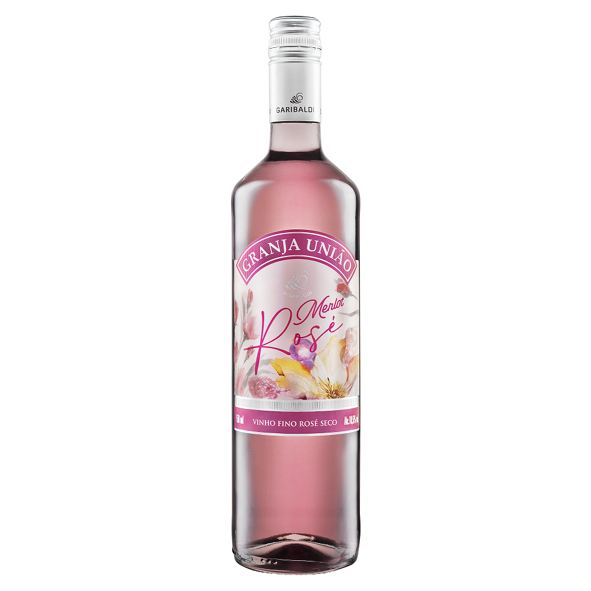

Vinho Merlot Rosé
Marca: Granja União
R$ 27,80 R$ 38,00 -32%
- Validade: Indeterminada
- Teor Alcoólico: 10,5% ABV
- Estilo: Vinho Rosé, Fino, Seco
- Origem: Brasil
- Temperatura Ideal: 4-6°C
INFORMAÇÕES
Harmonização: Permite boa harmonização com entradas, canapés, saladas, peixes, frutos do mar e cozinha oriental.
Sensoriais:
- Corpo: Líquido
- Aroma: Intenso de frutas vermelhas como cereja e morango e com sutil toque floral.
- Cor: Coloração levemente rosada, delicada e com boa vivacidade.
- Paladar: Em boca se apresenta com bom frescor, leveza e acidez equilibrada.
COPO IDEAL
Taça Bordeaux: Esta taça mantém o frescor, mas com o bojo mais aberto, para valorizar os aromas e sabores. A intenção do formato é acentuar a acidez do rosé e proporcionar um equilíbrio com sua estrutura.
R$ 27,80